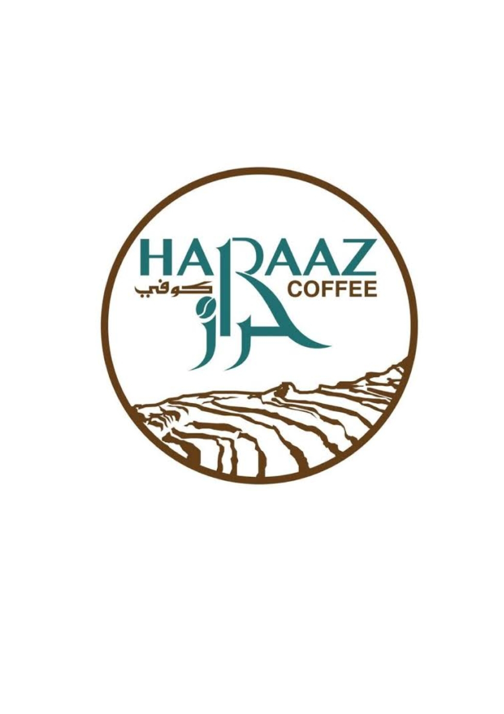

نكهة القهوة اليمنية الأصيلة تبدأ من هنا

نستخدم أجود أنواع البن اليمني من أعالي الجبال لتحضير مشروبات غنية بالنكهة.
نوفر بيئة مثالية للاسترخاء أو العمل، مع ديكور مستوحى من التراث اليمني.
من القهوة العربية إلى الاسبريسو والموكا، لدينا ما يناسب كل الأذواق.
نخدمك من خلال أكثر من 50 فرع موزعة في جميع أنحاء اليمن.